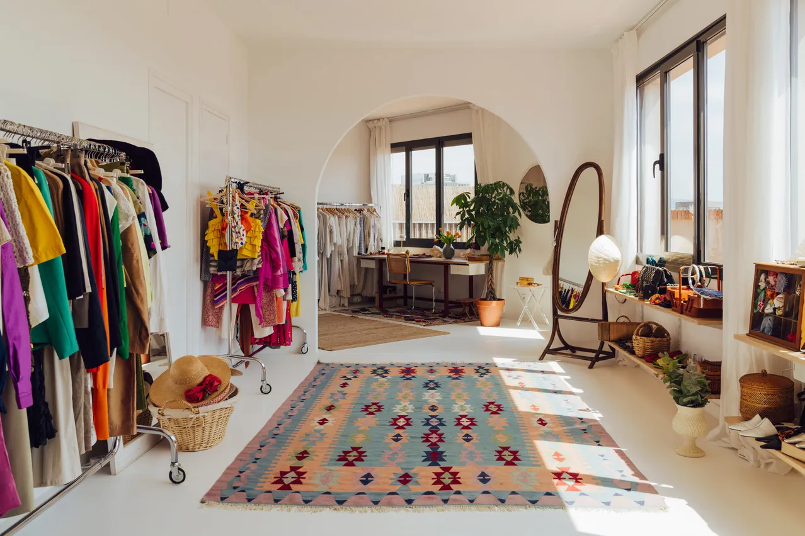

Conoce las variedades que hay:
Las mejores tiendas de ropa vintage en Ciudad de México
¿Te fascina lo retro y quieres incluirlo en tus looks de todos los días? Estas tiendas de ropa vintage en Ciudad de México se convertirán en tu nueva obsesión.

Esta de guía de las mejores tiendas de ropa vintage en CDMX es parte de nuestro directorio de las mejores tiendas vintage del mundo, seleccionadas por editores de todo el mundo. Ya sea que viajes buscando excelentes tiendas para visitar durante tu visita o si tienes curiosidad sobre las joyas vintage locales, este directorio de Vogue lo tiene todo para ti.
Las tiendas de ropa vintage en CDMX y el mundo han crecido en popularidad en los últimos años, y es que con la nostalgia como común denominador en las pasarelas, las tiendas y las calles, el mercado de prendas de segunda mano va en ascenso gracias a las tendencias que apuntan a otras épocas como los 90 o los 70, y a aesthetics del pasado, como el granny style, pero también como una alternativa a la moda rápida para aquellos que quieren seguir enriqueciendo su clóset, pero sin sumar más daño al planeta.
Lo cierto es que lo vintage regresa año con año, y al combinarlo con acentos actuales, el resultado puede ser un look ganador. Si quieres ir más allá y comenzar a transformar tus atuendos de oficina o de fiesta, aquí te compartimos cinco de las mejores tiendas para comprar ropa vintage en la Ciudad de México.